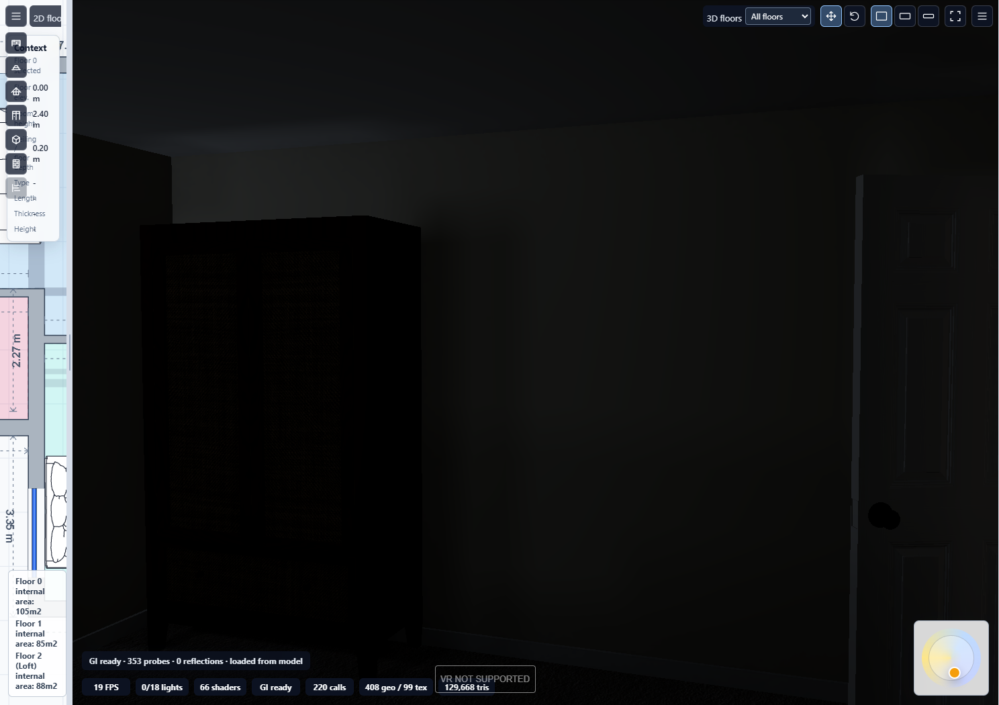
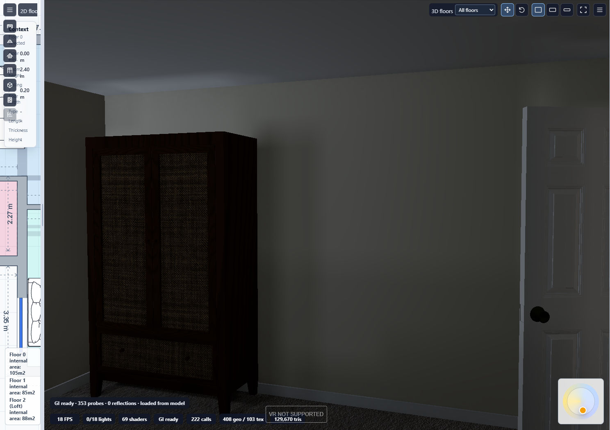
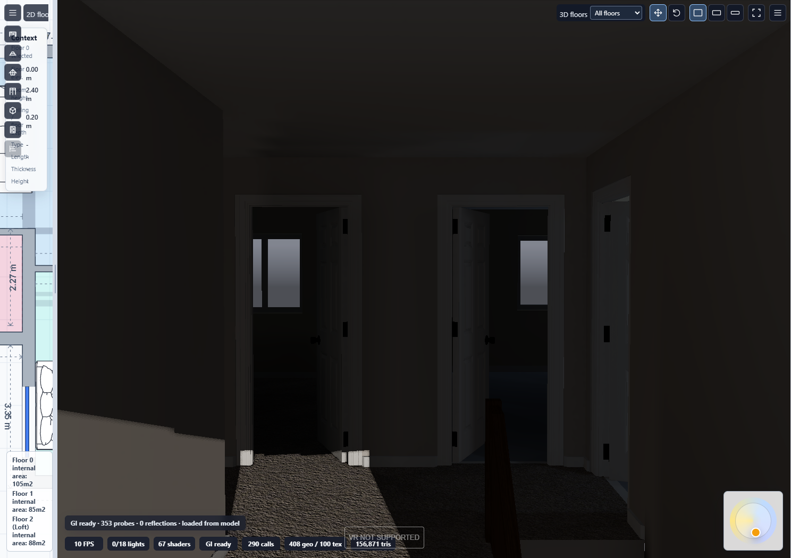
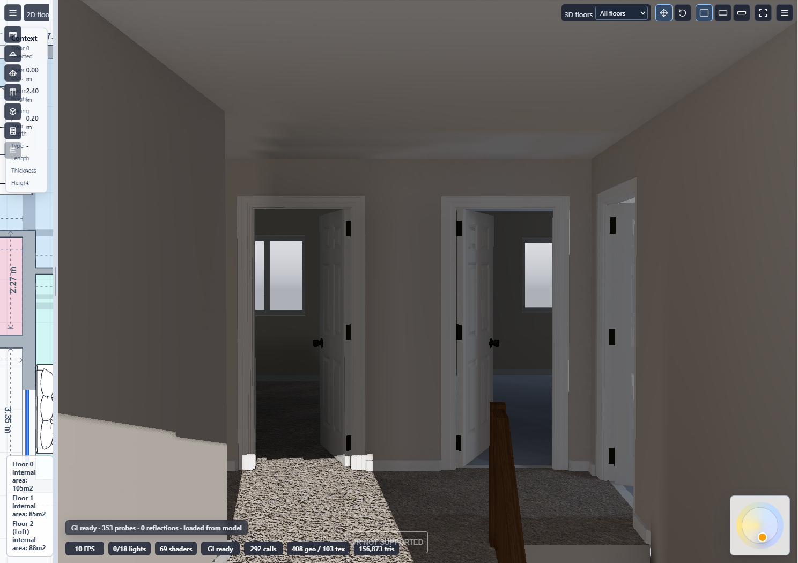

The rear-left bedroom window is open to sky in all three tested aperture directions. On the two sampled main wall points, exact probe sampling is about 6–12% above independent diffuse path integration. The displayed volume interpolation is about 26% and 12% above the reference respectively: there is no general deficit of bounced light on these wall samples. That does not establish absolute photometric calibration: both use the current sky and material model. Samples around furniture differ more, including an underestimate near the window side.
Reference: 2,048 samples, six surface encounters, diffuse transport with textured albedo, no probe reuse. Monte Carlo uncertainty is appreciable (roughly 10% at the upper wall). These measurements use the daylight-only Springfield fixture, ambient 0, and an approximate bedroom camera, not an exact recreation of the user's lamps-on screenshots. Values below are mean linear RGB irradiance, before receiver albedo and exposure. Raw measurements.
| Measured surface | Displayed probes | Exact probes | Reference sky + bounce | Display difference |
|---|---|---|---|---|
| Upper wall | 0.0733 | 0.0613 | 0.0579 | 27% |
| Right wall | 0.0689 | 0.0690 | 0.0618 | 12% |
| Wardrobe-facing sample | 0.0471 | 0.0471 | 0.0360 | 31% |
| Lower surface (not floor) | 0.0475 | 0.0553 | 0.0340 | 40% |
| Window-side surface | 0.0895 | 0.0922 | 0.1283 | -30% |
The optional Adapt exposure to room checkbox meters the existing linear image on the GPU, before exposure and ACES tone mapping. It uses a centre-weighted log average and smoothly adds 0–2 EV above the manual exposure. Returning to a brighter view reduces that addition faster. It adds no ambient light and does not recapture GI. It is off initially, saved on this device, and independent of the tracing quality. The preset preserves this choice. Disable it for fixed-exposure comparisons.
Both comparisons below use 0 EV, identical daylight-only GI, and Fast refinement to isolate exposure. They use a wider bedroom camera than the measurement audit so the wardrobe fits in view. The adaptation brightens the whole view: it is not local tone mapping or a fix for missing light transport.




The worker now skips disabled lamps, avoids albedo texture reads for opaque shadow rays, reports elapsed progress within rows, yields between small sample batches, and publishes a 32-pixel coarse view before full resolution. Progressive passes start at four samples, then 16, 32, 64 and 128 as applicable. The UI distinguishes GI readiness from surface-refinement progress.
Validation: 31 focused transport/filter tests; real-WebGL bounded exposure, bright-view recovery, black preservation and manual restoration; house UI toggle, unchanged GI generation/captured-face counts, and no new browser errors. Worker tests exercise all three sampling budgets on a bounded fixture, plus a 128-pixel Ultra request through the coarse preview and cancellation. These are not whole-house Ultra timing measurements. House test; worker test.